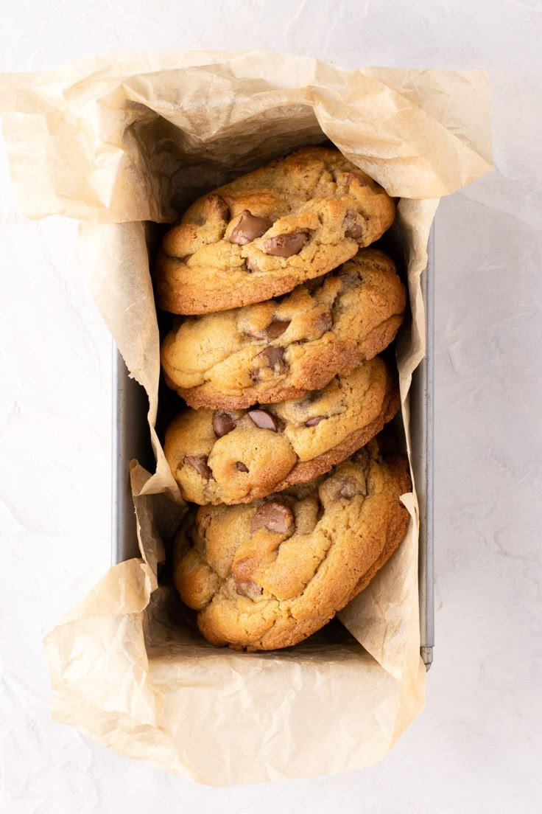

Cookies
Cookies crocantes por fora e macios por dentro, com pedaços de chocolate, perfeitos para lanches e sobremesas rápidas.

Ingredientes
Rende 12 a 15 cookies
- 1 xícara de manteiga em temperatura ambiente
- 1 xícara de açúcar mascavo
- 1/2 xícara de açúcar refinado
- 2 ovos
- 1 colher de chá de essência de baunilha
- 2 e 1/2 xícaras de farinha de trigo
- 1 colher de chá de bicarbonato de sódio
- 1/2 colher de chá de sal
- 1 a 2 xícaras de gotas de chocolate ou chocolate picado
Modo de Preparo
Tempo estimado: 30 minutos
- Preaqueça o forno a 180 °C e forre uma assadeira com papel manteiga.
- Em uma tigela grande, bata a manteiga com os açúcares até obter um creme fofo.
- Adicione os ovos e a essência de baunilha, batendo bem.
- Em outra tigela, misture a farinha, o bicarbonato e o sal.
- Incorpore os ingredientes secos à mistura de manteiga, mexendo até formar uma massa homogênea.
- Adicione as gotas de chocolate e misture delicadamente.
- Faça pequenas bolinhas de massa e coloque na assadeira, deixando espaço entre elas.
- Asse por 12 a 15 minutos ou até que as bordas estejam douradas.
- Deixe esfriar alguns minutos antes de transferir para uma grade e servir.
Dica do Chef: Para cookies ainda mais macios, retire do forno quando as bordas estiverem douradas, mas o centro ainda levemente mole.